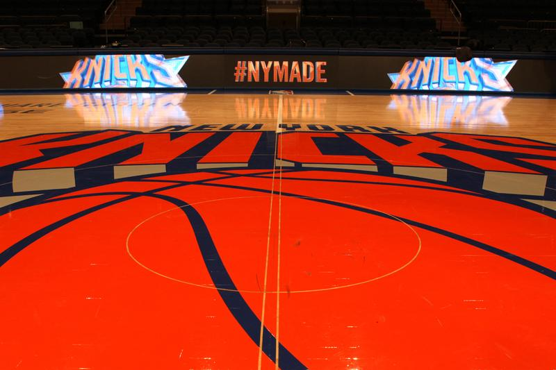

History
The New York Knicks, founded in 1946, are one of the NBA’s original teams and play at Madison Square Garden. They won championships in 1970 and 1973, highlighted by Willis Reed’s iconic return in the ’70 Finals. In the 1990s, led by Patrick Ewing, the Knicks were perennial contenders and reached the Finals in 1994 and 1999. After years of struggles in the 2000s, the team has recently rebuilt around stars like Jalen Brunson and Julius Randle, once again becoming a rising force in the Eastern Conference.
Knicks roster

Jalen Brunson
Guard
A dynamic point guard for the New York Knicks, known for his elite scoring, leadership, and clutch playmaking.
OG Anunoby
Forward
A versatile two-way forward, valued for his defense, strength, and ability to hit timely shots.

Jordan Clarkson
Guard
A dynamic scoring guard who provides instant offense and veteran experience off the bench.
Miles "Deuce" McBride
Guard
A tough, defensive-minded guard who brings energy, ball pressure, and hustle off the bench.

Josh Hart
Guard/Forward
A gritty do-it-all player, known for his rebounding, hustle, and relentless energy on both ends.
Karl-Anthony Towns
Center
An elite big man with scoring versatility, three-point shooting, and strong inside presence.

Tyler Kolek
Guard
A crafty playmaking guard who excels at facilitating offense and keeping teammates involved.

Mikal Bridges
Forward
A durable two-way wing, respected for his defense, versatility, and ability to space the floor.
Pacome Dadiet
Forward
A young, athletic forward with size and upside, bringing energy and developing skill to the roster.
Mitchell Robinson
Center
A dominant rim protector and rebounder, known for his shot-blocking and inside finishing.
Guerschon Yabusele
Forward
A strong forward who adds physicality, toughness, and floor spacing ability to the rotation.
Location
Knicks Social Media